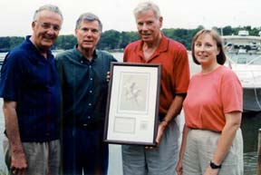
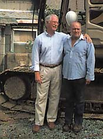
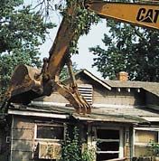
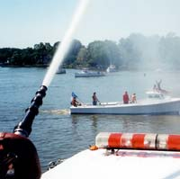
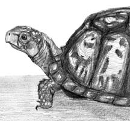

|
|
This Week's Articles
(click on the link to jump to the artical)
Gov. Harry Hughes Still a Hero After All
|  |
| Sen. Paul Sarbanes, former state senator Gerald Winegrad and Susan Brown of League of Conservation Voters with Bay hero Gov. Harry Hughes, holding award. |
“Harry Hughes is a true hero in conservation,” said former state senator Gerald Winegrad of Maryland’s 57th governor, who guided our state from 1978 to 1986. “His dedicated leadership really began the Bay cleanup and brought other states into the effort.”
That historic effort shores up all that’s since been done on the Bay. Now, it’s earned Gov. Hughes the Maryland League of Conservation Voters’ 2002 Conservation Leadership Award. Hughes was also dubbed a Hero of the Bay for his role in igniting the cleanup of the Chesapeake.
The award was presented at a July 14 recognition at the home of former Sen. Winegrad, who added that Hughes’ leadership “has been the guiding force behind most of the important environmental protections Marylanders enjoy today.”
In addition to League Board members, U.S. Senator Paul Sarbanes, Attorney General Joe Curran and Maryland Department of Natural Resources Secretary J. Charles Fox joined state legislators and environmental leaders in honoring Hughes for his commitment to conservation.
As governor, Hughes pioneered the 1984 Chesapeake Bay Agreement, which brought together Maryland, Virginia, Pennsylvania, the District of Columbia and the federal government to restore the treasured waters. He also developed and signed into law landmark legislation, including the Critical Areas Law. Also on Gov. Hughes’ watch, phosphates were banned in detergents, stormwater was managed and grants were offered to farmers to prevent soil and nutrient runoff. Hughes also established a Heritage Conservation Program to acquire and protect sensitive lands. Many of these initiatives have become models for other states and nations.
“Governor Hughes provided enduring leadership not only for Maryland but as a model for global conservation strategies,” said Bill Eichbaum, who oversaw environmental programs for the state Department of Health.
Hughes’s environmental efforts also include the striped bass moratorium that led to the world-recognized recovery of the Chesapeake’s rockfish.
When he took office, Hughes had no special dedication to the Bay. But he heeded warnings about the Chesapeake’s declining health and took brave — and often isolated — stands. “It was the in-depth study done by the EPA,” Hughes recalls. “My staff went over it and we decided something should be done.” He added that as governor, he was able to travel the Bay and all of its rivers and see firsthand what was going on.
Showing that his support of the Bay was not fueled by political expediency, he continued his conservation efforts long after he left the governor’s office, becoming chairman of the Eastern Shore Land Conservancy, president of the Maryland Center for Agro-Ecology and a member of the Advisory Committee of the Maryland League of Conservation Voters. In 1998, he received one of the region’s highest honors, the Truitt Environmental Award. Named after pioneer Chesapeake Bay scientist Reginald V. Truitt, the award is sponsored by the University of Maryland Center for Environmental Science.
“Gov. Hughes’s incredible environmental record is legendary in the conservation community, and we are proud to honor his commitment, leadership, vision and dedication,” said Maryland League of Conservation Voters’ Susan Brown in bestowing the latest recognition of his heroism.
— Katie McLaughlin
Return to the top
What’s Good for Junior Is Good For North Beach
Drive south on Route 261 into North Beach the fourth weekend in August for the town’s 19th annual Bayfest, and you’ll be as surprised by what you don’t see as by what you do. For once and for all, the 100-year-old town with the million-dollar view has lost its chance to medal in the Armpit of America contest. Truth be told, it’s likelier to score as one of America’s Prettiest Places.
|  |
photo by Sandra Martin
North Beach Mayor Mark Frazer, left, and lifelong resident Junior Lubbes. |
Sure the boardwalk is the best gathering place between Solomons and Annapolis for Bay-watching, people-watching and dog-watching. Sure the sandy Bay beach has fenced out jellyfish. Sure houses are fetching and gardens abloom. Sure businesses and services are booming, in a Smart-Growth kind of way. Sure the annual festival means good times for thousands of people.
The big difference in North Beach is Junior Lubbes’ new house.
You don’t know North Beach if you don’t know Junior [Vol. IX, No. 22, May 31, 2001]. Not only is Junior a lifelong resident, he gets around — usually with his ample, brown belly fully exposed. “It gets hot,” as he said July 19, after shedding the long-sleeved, collared shirt he’d worn briefly to mark a milestone.
For all of his 47 years, Junior has lived in only one house. His grandparents purchased the cottage in 1927. His parents grew up there. He and his sisters were born there. Junior stayed. And, in his own way, prospered.
Junior’s wealth isn’t what your average Bay dweller is likely to value in the year 2002. Instead of SUVs, jetskis, riding mowers and patio sets, Junior collects cast-offs. Among last year’s inventory were a six-pack of cars and trucks plus lawnmowers, bicycles, wheelbarrows, sinks, rakes, kerosene heaters, air conditioners, barbecue grills, tanks and firehoses.
So great was Junior’s wealth that you couldn’t enter North Beach from the north and miss it, teeming along his Bay Avenue backyard, which is as long as a North Beach block — and the gateway to the town.
Solving the Junior problem became a mission to town Mayor Mark Frazer, who’s overseen much of North Beach’s spiffing-up. Frazer wanted a win-win solution that would work for Junior as well as for the town.
First came a fence, a Fort Apache-style edifice concealing much of Junior’s scrap yard. It went up last year, paid for with deductions from Junior’s pay on the city maintenance crew. By this summer, landscaping had softened its edges.
The centerpiece of Frazer’s plan was a new house for Junior. Only two or three rooms, but it would have working plumbing, hot water and a central heating and cooling system — on top of a two-bay garage.
Local businesses would contribute, neighbors would help build it, Junior could live in air-conditioned comfort — and the town of North Beach would rejoice.
The plan worked.
Last summer’s Junior Lubbes Appreciation Afternoon at Chaney’s on the Bay brought in $25,000. Over three dozen businesses contributed or discounted everything from trusses to flooring to kitchen counters and appliances. Calvert County Government anted in solid waste disposal.
But the biggest contribution was labor. Before the new house could rise, objects big and small had to be hauled away. Then volunteer brush-hoggers and exterminators had to work their way through a lot filled with brush and debris. Only then could construction crews raise Junior’s dreamhouse, designed by Chesapeake Beach architect and entrepreneur Chuck Rutkay.
This summer, Junior has a new house.
But the story isn’t over, for Junior also had an old one — and so did North Beach.
Until July 19, 2002, which the town of North Beach designated Junior Lubbes Demolition Day.
|  |
| photo by Sandra Martin |
The morning was warm, and rows of chairs assembled on Bay Avenue were filled with people who’d helped build a new house for Junior. Over them wafted words of praise and — from the old eyesore — the unmistakable odor of rotting garbage. Champagne was raised in celebration and donuts munched.
Then up climbed Mayor Frazer — who is a dentist in private life — into contractor Tim Stafford’s big excavator. The machine’s toothy jaw snatched first a tentative bite, then a bigger bite, then a very big bite from the south corner of the roof of Junior’s old house. Within an hour, with pros working the gears, the big machine devoured the whole thing.
As for his old house, “I won’t miss it,” Junior said.
Will North Beach and Junior live happily ever after?
If promises have anything to do with it, they will.
“Junior now realizes,” announced the mayor, “that the same code and ordinances apply to everyone in town, and he assures me he is redoubling his efforts to be a good citizen.”
See for yourself when you drive into town.
— SOM
Return to the top
Fishermen Asked to Tell the Truth
You catch ’em, clean ’em, cook ’em and eat ’em. But are fish from the Bay and its tributaries going to agree with you?
A new survey mailed out the week of August 11 may help answer questions about whether Maryland anglers should be concerned about eating the fish they’re catching.
Three thousand licensed anglers have been randomly selected by the Maryland Department of the Environment and Johns Hopkins Bloomberg School of Public Health to answer questions on Maryland waterways, including the Bay and its surrounding waters. They’re asked where and how often they fish, whether they’ve noticed an advisory in their favorite fishing spots and whether such notices affect their fishing. Surveyors also want to know how much of that fish they eat, how it is prepared and whether they eat fish from an area under advisory.
To learn more, the researchers will be visiting with urban anglers later this month to ask about their catching and eating habits. Eventually, they’ll look at the areas the anglers single out and compare their reports with toxicology studies to see if public health risks exist.
“We anticipate that each of these studies alone will provide timely information that will help us answer a number of important questions,” added Dr. Ellen Silbergeld, principal investigator and professor of Environmental Health Sciences at Johns Hopkins.
They hope to learn whether current advisories are effective, how advisories are best posted and whether state agencies use accurate estimates of fish consumption by Maryland anglers.
Earlier this year, Department of the Environment issued new advisories setting limits for eating 13 recreational species in 14 tidal bodies throughout the state.
But do anglers pay attention?
“It’s becoming more and more of a concern in Maryland,” said Johns Hopkins Bloomberg School of Public Health’s Carol Resnick.
Accurate fish consumption estimates are critical in determining how many meals of fish individuals can safely eat and where consumption advisories should be posted. Most at risk, potentially, are pregnant women, children and subsistence fishers.
“Studies like this are essential,” said Theresa Pierno, Maryland director of the Chesapeake Bay Foundation, “if we are to effectively protect public health in Maryland,”
— Katie McLaughlin
Return to the top
Blessings Galore at Shady Side
|  |
photo by Mike Wedemeyer
A water cannon sprayed a 200-foot arch over passing boats in Parrish Creek’s Blessing of the Fleet. |
In Shady Side’s revived Blessing of the Fleet, thousands of people were blessed with a gorgeous August day while a dozen workboats got blessings of a higher order.
The Rev. John Coursey of Sollers United Methodist Church, Lothian, began the blessings, anointing each in the parade of boats as they passed: “May your boat be sturdy, your crew courageous, your harvest plentiful, and may you have the safety of the Lord with you.”
The ancient tradition of blessing vessels to protect seafarers was revived after a 27-year hiatus at Parrish Creek, the busiest watermen’s creek on the Western Shore.
Skipjacks and other working boats paraded before the reviewing stand at Discovery Village to accept the blessings offered by local clergy. Beaming captains piloted and bikini-clad women waved to the crowd of well-wishers as they sailed under the 200-foot arch of water shot from an Avalon Shores fire truck’s hose. Demonstrating their agility and skill, the boats made a pattern of syncopated trips around Parrish Creek. But the real test came when they competed against each other in docking skills. Three winners — Captain Bob Evans on Tempest; Captain Bill Curry on Captn Bunky; and Captain Kenny Keen on Long Shot — received large trophies to honor their efforts.
August 10 was officially proclaimed Watermen’s Day by County Executive Janet Owens. The entire District 30 delegation — Sen. John Astle and Delegates Michael Busch, Virginia Clagett and Dick D’Amato — also paid tribute to our working watermen.
True to festival form, there was continuous entertainment showcasing a Children’s Choir, the Shady Side Sour Notes and Bay poet laureate Tom Wisner, who had both stories and music to share with the foot-stomping, happy crowd. Two radio stations — WNAV and WRYR — were broadcasting live.
As surely as the ancient mythical Sirens called out to sailors, appetites were tempted by the aromas created by the cooks preparing crabcakes, soft shells and fried fish.
To get closer to the Bay, festival-goers toured the skipjacks, checked out the Jolly Roger — a skipjack under construction — or learned from the Chesapeake Bay Foundation how oysters are restored.
To learn more about the history of their community, they watched a blacksmith and talked with volunteers from Captain Salem Avery House, a watermen’s museum operated by the Shady Side Rural Heritage Society. Vendors sold artwork, jewelry and crafts.
The common denominator of the day was happiness. People smiled, patted one another’s dogs, visited with neighbors, played with children and enjoyed the day — walking in the sunshine, sitting beneath a tree or taking in a breeze from the Bay. This day showed Southern Anne Arundel County at its best, as a heterogeneous mix of people bonded together by a deep-rooted love of the water and our environment.
— Flo Ormond and M.L. Faunce
Return to the top
In Season ~ Terrapene carolina carolina
by Gary Pendleton
Pitiable seems the condition of this poor embarrassed reptile: to be cased in a suit of ponderous armour, which he cannot lay aside; to be imprisoned, as it were, within his own shell, must preclude, we should suppose, all activity and disposition for enterprize.
— Gilbert White: The Natural History of Selborne, April 21, 1780
Gilbert White, the Vicar of Selborne, was a keen observer of nature. His detailed diary of observations from in and around his parish has been in print for generations. Most of his entries were written in a dry style, but his accounts of the tortoise are humorous and lively. White brought the tortoise in question with him when he relocated to Sussex from Ringmer, near Lewes, where it had been kept in a courtyard for 30 years.
White’s infatuation with the land tortoise he immortalized is an attachment people can still relate to. But if White could have had a modern understanding of ecology and conservation, he might have been satisfied to allow the venerable old fellow to remain in his true home. I like to think that the vicar would have done the right thing.
In the eastern United States, we have something like White’s land tortoise: Terrapene carolina carolina, the Eastern box turtle. There is something about a box turtle that makes people want to take it home. Finding one in the woods or the yard is like discovering a living jewel box. It has a pleasingly shaped, high-domed shell that makes you want to cup your hand over its back. Who can resist the temptation to reach down and pick it up, to feel its weight and the texture of its ornately decorated shell?
It is not hard to see why box turtles are kept as pets. They are gentle, comely creatures. Unlike other forms of wildlife, they won’t run or fly away. To even apply the term wildlife seems questionable, given their serene nature. They don’t bite like a snapper would, or stink like a stink pot or slide away like a slider, and they don’t swim in the Bay like diamondback terrapins. There are no basketball teams that I know of named for them, either.
They are not slimy, nor do they appear so. They don’t take up much room, and they are easy to care for. Another part of their appeal is in their faces, which have an expression of ancient, calm wisdom. In fact, that turtle may be older than grandma.
I confess that as a boy I kept box turtles as pets once or twice. As a five-year-old, nothing was more exciting, except perhaps the Flintstones on TV, than finding a box turtle to bring home, almost always to be let go with the hope that it would stay and live around the house.
But a box turtle removed from its place will wander in search of home. It will cross over dangerous roads. It may spend years searching and wandering. Isn’t that sad?
During that time, the box turtle is not likely to produce any little box turtles. It may also carry and spread disease that it picked up from human contact.
Box turtle populations are thinning. When the numbers in a given area reach a critical low point, the population is considered reproductively dead, meaning there aren’t enough turtles around to sustain the population. Turtle collecting, automobiles and habitat loss are the major threats to box turtles, but there is very little else that can harm a box turtle once it reaches a few years old.
They can easily live 30 to 40 years and are capable of living to be over 100. They might be the longest-living wild creature in this part of the world. They are capable of clamping up so tight when threatened that it is said even a knife won’t penetrate the gap between the upper shell and the dorsal shell, or carapace. After reaching maturity at 12 years, a female may lay hundreds of eggs over a span of many decades, but only a few hatchlings will reach adulthood.
Everybody loves the turtle, so let’s show some respect for the old creature and leave him or her alone.
Return to the top
Way Downstream …
In Chesapeake Bay, the decline of crabs may also be destroying salt marshes, a Brown University team of researchers warned last week. The scientists said that without blue crabs feasting on snails, the snails consume the marsh vegetation …
In Virginia, they can’t make up their minds about the danger of pfisteria, “the cell from hell” that killed thousands of Chesapeake fish five years ago. The Virginia Institute of Marine Sciences has been unable to re-create the toxin in a laboratory, while Old Dominion University researchers say in a study that it’s as toxic as people believed …
In Russia, officials say they are serious about their worry over all the antibiotics American poultry producers feed their chickens. The Russians banned U.S. poultry imports for a month earlier this year and now want health certificates to accompany chicken shipments …
Our Creature Feature comes from Iceland, where Free Willy star Keiko, a killer whale, apparently is doing well out of the limelight.
Keiko was captured near Iceland and starred in marine shows for two decades before his role in the 1993 movie Free Willy, in which he obtains freedom.
He has real freedom now, and a spokesman for Ocean Futures Society, which monitors Keiko, told Reuters that Keiko “has become more interested in the ocean and other whales than human beings.”
Copyright 2002
Bay Weekly
|